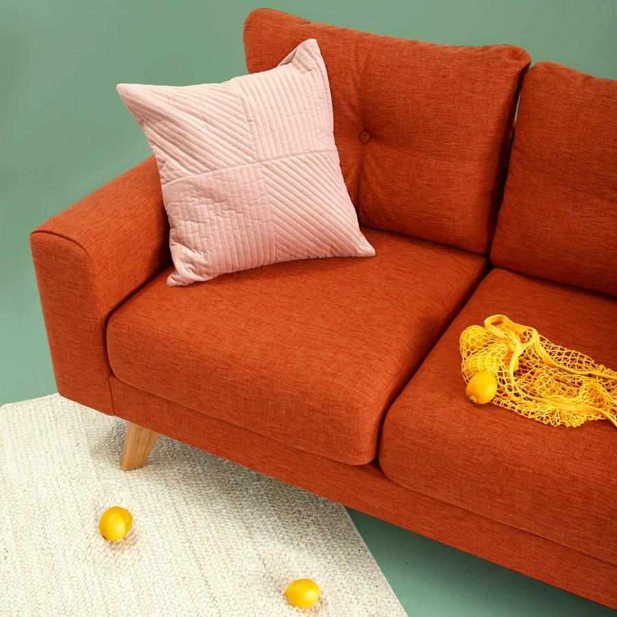
Sofás
Retapizado completo, cambio de espumas y rellenos, fundas y arreglos de costuras.
Tapizamos sofás, sillas, sillones y cabeceros, restauramos piezas con historia y fabricamos en nuestro propio taller.
Mándanos una foto de tu mueble por WhatsApp y te decimos qué se puede hacer, qué tejido le va mejor y cuánto cuesta.

Retapizado completo, cambio de espumas y rellenos, fundas y arreglos de costuras.
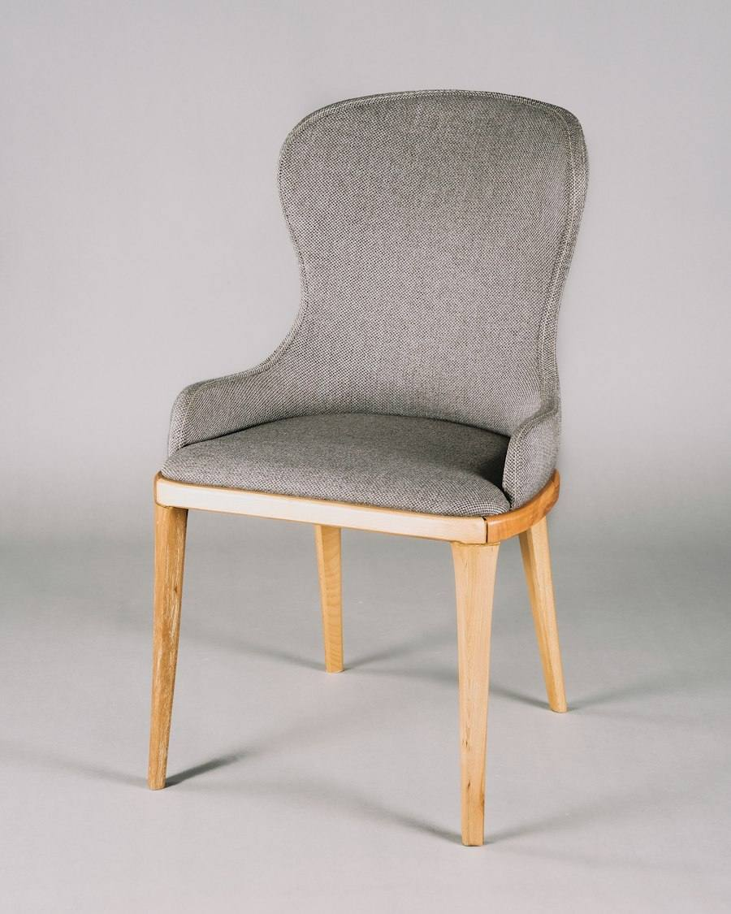
Asientos y respaldos de comedor, juegos completos y sillas de hostelería.
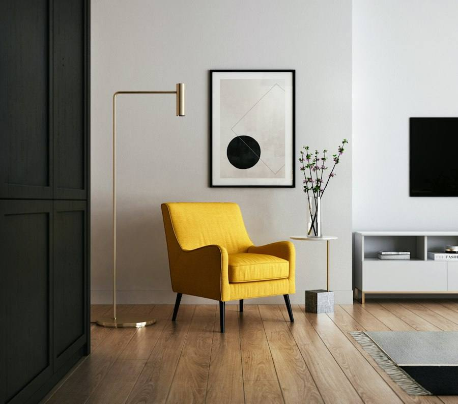
Butacas, orejeros y sillones de lectura, con el tejido o la piel que elijas.
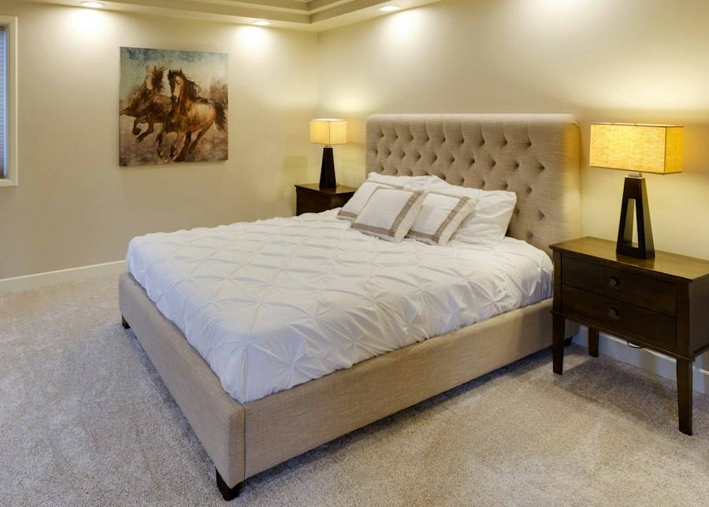
Cabeceros tapizados a medida: lisos, capitoné o con vivos, para cualquier ancho de cama.
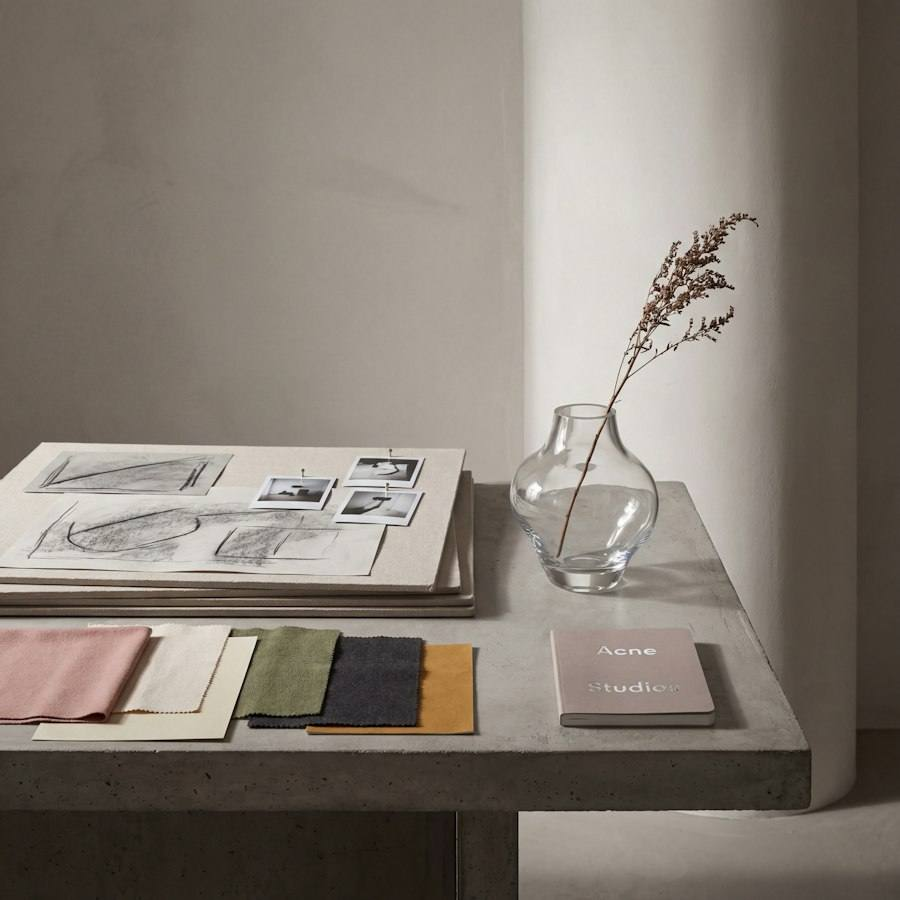
Te ayudamos a escoger tela, color y acabado según el uso que le vayas a dar.
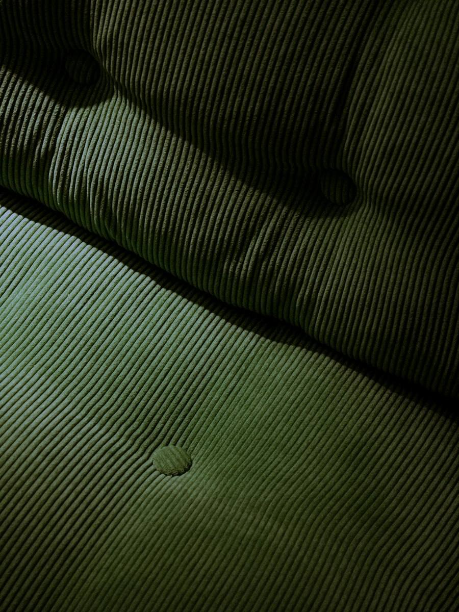
Capitoné, botonaduras, vivos y costuras vistas hechos en el taller.
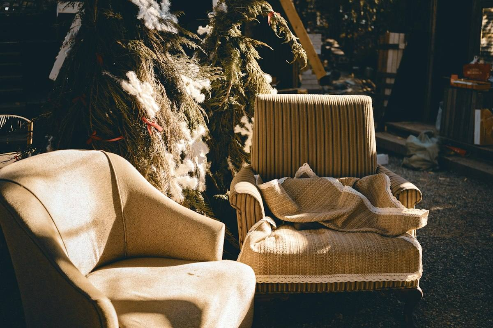
Fabricamos piezas a medida y devolvemos la vida a muebles con valor sentimental, respetando su estructura original.
Por WhatsApp, con las medidas aproximadas del mueble.
Te proponemos tejido y acabado, y te damos el precio.
Te avisamos cuando esté listo para que pases a recogerlo.
Imágenes de ejemplo. Aquí irán las fotos de los trabajos de Tapisseria Gama.
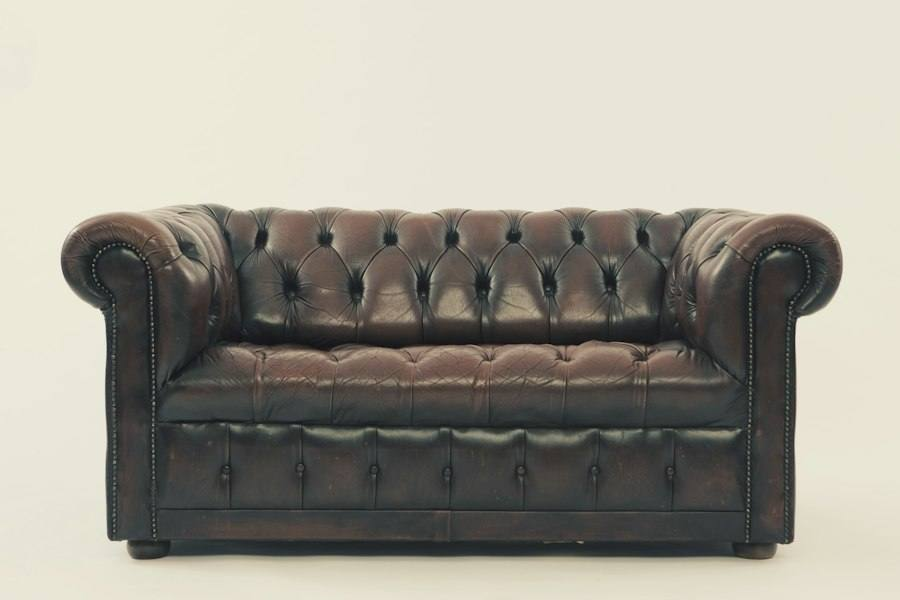
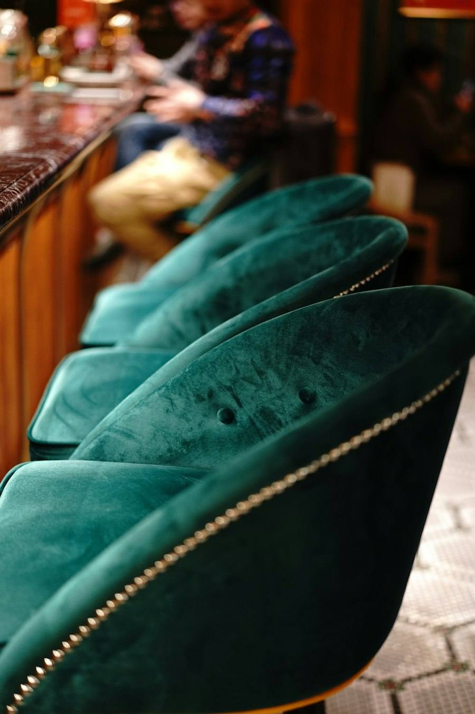
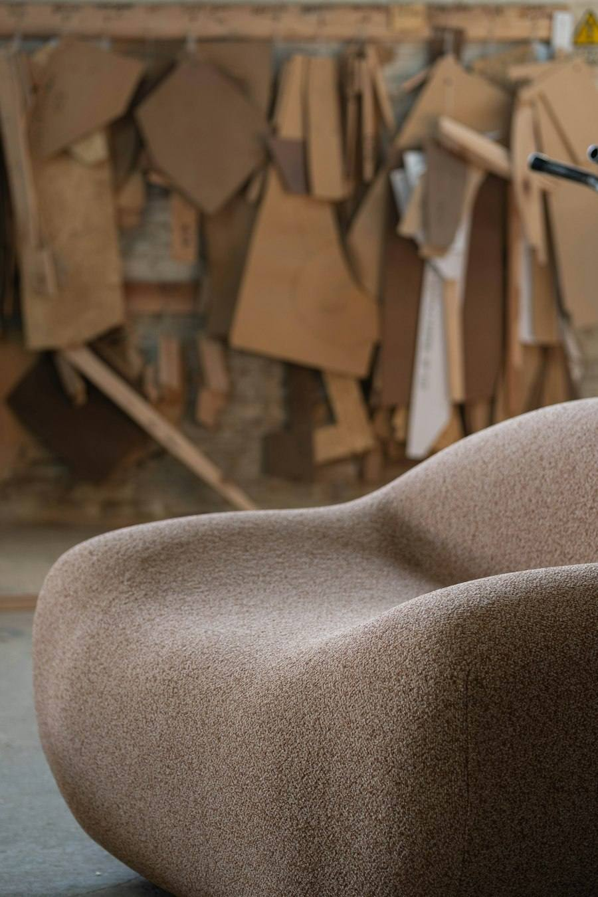
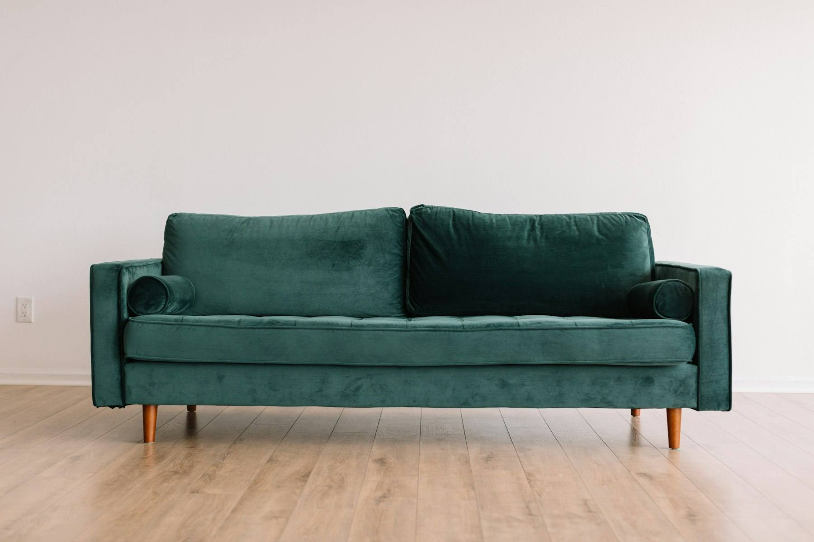
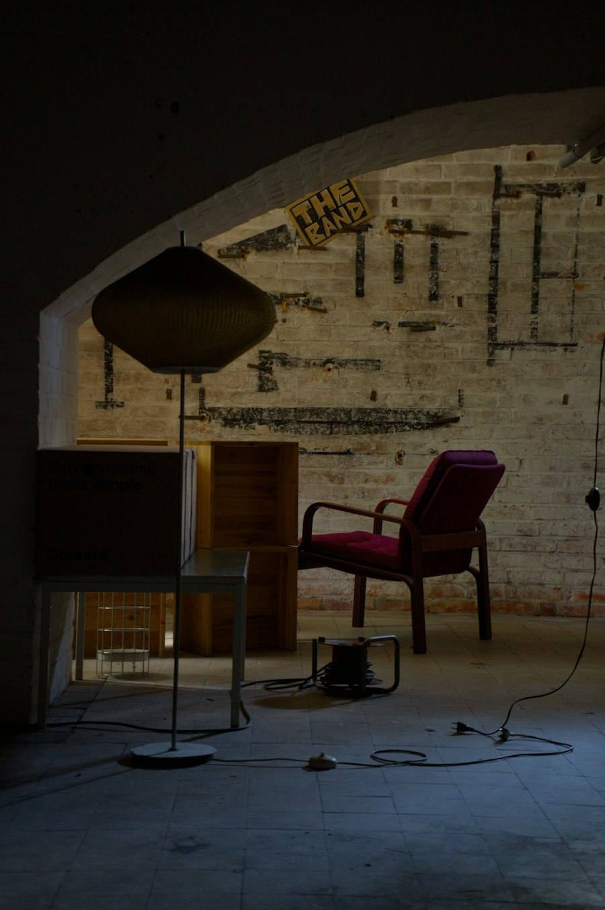
Mándanos una foto y te decimos qué podemos hacer.
Pedir presupuesto por WhatsApp